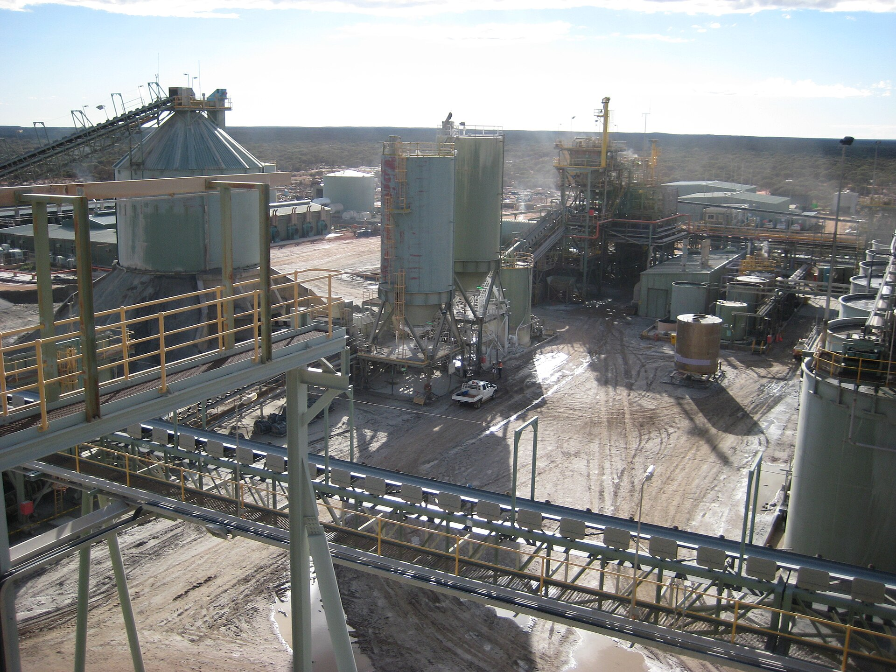

Indian Company Brings Gold Mine Online in Kyrgyzstan: $34.2 Million Spent on the Altyn Tor Project
President Sadyr Japarov opened the processing plant in an online ceremony on Sept. 13. The project is expected to create close to 400 jobs.

On Sept. 13, 2026, Kyrgyz President Sadyr Japarov launched the processing plant of the Altyn Tor gold project at the Solton-Sary deposit in an online ceremony. The project is being carried out by the Indian company Deccan Gold Mines through its Kyrgyz subsidiary, Avelum Partner LLC.
According to official figures, a total of $34.2 million has been invested in the project. It is the first investment by an Indian company in Kyrgyzstan's gold mining sector to reach the production stage.
Jobs and localization
Once the plant reaches design capacity, it is expected to create at least 400 jobs. More than 95 percent of them are designated for Kyrgyz citizens.
Where the gold goes
Under the terms of the agreement, commercial-grade gold produced at the enterprise must be handed over to the state company Kyrgyzaltyn. The Indian partner cannot export the product independently.
This condition reflects Kyrgyzstan's general approach to the mining industry: the state seeks to retain control over the flow of precious metals extracted in the country.
- Deposit: Solton-Sary (Naryn region)
- Project: Altyn Tor
- Investor: Deccan Gold Mines (India)
- Local operator: Avelum Partner LLC
- Investment: $34.2 million
- Jobs: more than 400, 95%+ local
Gold's place in the Kyrgyz economy
Gold is Kyrgyzstan's largest export item. A significant share of the country's economy has been tied to the Kumtor mine, which for many years stood at the center of contentious relations with a foreign operator; it was transferred to state control in 2021.
Since then the government has sought to attract new foreign investors to the mining sector, though the requirement to sell output through state structures has been retained in most agreements.
India and Central Asia
India has been gradually expanding its economic presence in Central Asia in recent years. Its main constraint is the absence of a direct land route: cargo travels through Iran or other corridors.
A BRICS summit was held in New Delhi on Sept. 12–13, 2026, where cooperation on transport corridors and critical minerals was among the topics discussed.
Environmental and social aspects
Mining projects in Kyrgyzstan are often accompanied by objections from local residents over the impact on water and pasture resources. Disputes between local residents and operators had previously been recorded in the Solton-Sary area.
The official announcements gave no detailed information about the plant's environmental monitoring system or its waste management scheme.
The next stage
The Solton-Sary deposit
The Solton-Sary deposit is located in a mountainous area of Kyrgyzstan's Naryn region. The deposit has been known for many years, but only recently reached industrial-scale production.
Disputes between local residents and mine operators had previously been recorded in the area. Such clashes typically arise over pasture use, the condition of water sources and local employment.
Gold extraction technology
Processing gold ore generally involves crushing, milling and chemical separation. In many cases, cyanide leaching is used.
The method is considered efficient, but it requires strict standards for waste storage and water treatment. The condition of tailings storage facilities is one of the most widely discussed environmental issues in the mining industry.
The official announcements gave no detailed information about the Altyn Tor plant's environmental monitoring system or its waste management scheme.
Kyrgyzstan's mining policy
Kyrgyzstan has chosen a course of strengthening state control over the mining industry. The largest mine, Kumtor, was transferred to state management in 2021, bringing an end to contentious relations with foreign investors.
Since then the government has sought to attract new investors, but the requirement to sell output through state structures has been retained in most agreements. In the Altyn Tor project as well, the gold is designated for transfer to Kyrgyzaltyn.
Such a condition reduces price risk for the investor but limits control over sales channels.
India and the region
India has been gradually expanding its economic presence in Central Asia. Its main constraint is the absence of a direct land route: transit through Pakistani territory is limited, so cargo travels through Iran or other corridors.
A BRICS summit was held in New Delhi on Sept. 12–13, 2026; the document also covered cooperation on transport corridors and critical minerals.
Gold's economic role
Gold remains Kyrgyzstan's largest export item. Rising gold prices on the world market have a positive effect on the country's export earnings.
Kyrgyzstan's economy grew 11.1 percent in the first seven months of 2026; at the same time, annual inflation remained above 11 percent.
In countries where mining accounts for a large share of the economy, the dependence of revenue on external price conditions is cited as one of the principal risks.
Localization requirements
The project specifies that more than 95 percent of jobs are designated for local citizens. Such requirements are common in the mining industry: they are aimed at ensuring that a project delivers visible benefits to local communities.
In practice, the degree of localization depends on the availability of qualified personnel. Additional training programs are often organized for technical positions.
The project's next stages
The plant's launch marks the start of production, but reaching design capacity usually takes several months. During this period equipment is calibrated and the technological process is stabilized.
The company is expected to publish separate figures on annual gold output and the timeline for moving to commercial production. These indicators have not so far appeared in open sources.
The foreign investment climate
The history of foreign investment in Kyrgyzstan's mining sector is complicated. A number of projects were halted because of license reviews, objections from local residents or tax disputes.
For that reason, every project that reaches the production stage serves as a test case for the country. Altyn Tor was noted as the first project brought to this stage by an Indian company.
The key criteria for investors are generally the same: stability of the licensing regime, predictability of tax terms and a dispute resolution mechanism.
Other mining projects in the region
Mining is a primary export source for a number of Central Asian countries. Uranium, copper and iron ore lead in Kazakhstan; gold, copper and uranium in Uzbekistan; and aluminum and precious metals in Tajikistan.
Interest in the region has also grown in recent years around critical minerals. On Sept. 14, 2026, a four-way memorandum was signed in Seoul between the Asian Development Bank, the Export-Import Bank of Korea and Uzbek institutions.
The company is expected to announce separately when the project will reach commercial production volumes. Final figures for production capacity and annual gold output have not yet been released.